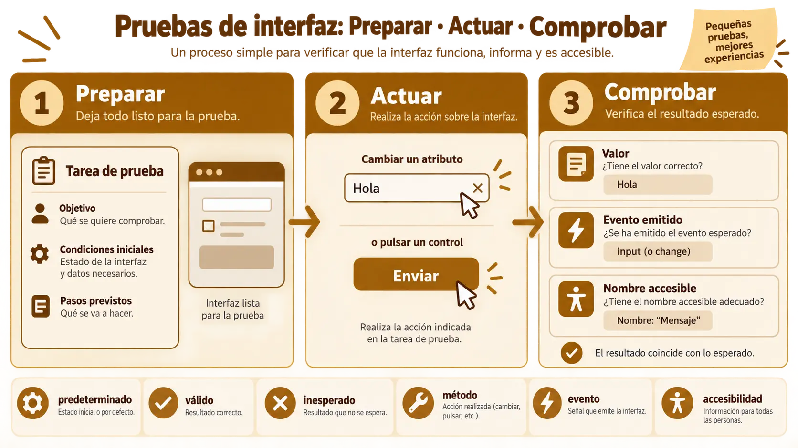

Contenido de la página
Objetivo docente
Diseñar y ejecutar pruebas unitarias sobre el contrato público, los estados, los eventos y la accesibilidad básica.
Contenido para explicar
Una prueba unitaria comprueba un comportamiento pequeño en condiciones controladas. Se estructura como preparar, actuar y comprobar. Para un componente interesa probar valores por defecto, cambios de atributos/propiedades, métodos, eventos y contenido accesible. Una prueba no debe depender de detalles visuales irrelevantes.

Ejemplo básico resuelto
const card = document.createElement('task-card');
document.body.append(card);
console.assert(card.title === 'Tarea sin título', 'título por defecto');
let received;
card.addEventListener('task-toggle', event => received = event.detail);
card.shadowRoot.querySelector('[data-action="toggle"]').click();
console.assert(received.completed === true, 'publica el nuevo estado');
card.remove();La prueba observa el contrato: valor inicial y evento publicado. La consulta interna solo simula la acción; no valida colores exactos.
RA3-PB06 · Banco de seis pruebas
Enunciado para publicar
Solicita a la IA seis pruebas y revisa que cubran: valor por defecto, atributo válido, atributo inesperado, método, evento y nombre accesible. Ejecuta cada una, provoca deliberadamente un fallo y registra diagnóstico y corrección.
Solución orientativa
Mostrar ejemplo de solución
| Caso | Resultado esperado |
|---|---|
Sin title |
Usa «Tarea sin título» |
priority="high" |
Expone prioridad alta |
| Prioridad desconocida | Normaliza a normal |
toggle() |
Cambia completed |
| Acción de borrar | Emite una vez {id} |
| Botón principal | Tiene nombre accesible |
El fallo inducido elimina bubbles:true; la prueba desde el contenedor deja de recibir el evento. La corrección restablece la propagación y todas las pruebas pasan.
Comprobación y cierre
Entrega salida fechada de las pruebas y explica qué error detectaría cada una. «La IA dice que funciona» no cuenta como ejecución.